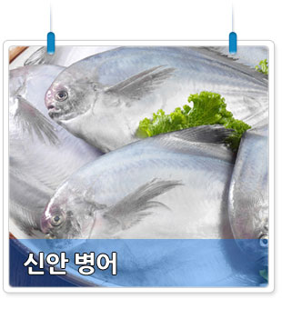

|  |
| 번호 | 3 |
|---|---|
| 분류 | 음식 |
| 음식 번호 |
F0003 |
| 음식명 | 신안 병어 |
| 음식 주요 설명 |
우럭은 넙치와 같이 우리나라 해산어 양식량의 90%정도를 차지하며, 육질이 단단하여 씹힘성이 좋으므로 우리국민들이 선호하는 어종이다.피로회복, 간기능 향상, 노화방지에 효능이 있다. |
| 장소 상세 설명 |
우럭은 서식지를 거의 이동을 하지 않는 특성을 지니고 있으며 살은 맛이 좋아 횟감으로 가장 즐겨먹는 생선이다. 야채와 함께 끊여먹는 매운탕은 얼큰하면서도 시원하다. 환경에 대한 적응성이 있고 성장이 빠르며 흑산권역 청정해역에서 대규모로 양식하고 있다. 연안의 암초지대에 서식한다. 봄에 산란하며 부화한 치어는 2 0 ‾ 3 0일간 부유생활을하다가 저서생활로 들어간다. 어린 개체는 일정기간 동안 암초등 고형물에 붙어 생활하다가 뻘 바닥에 파고 들어간다. 살은 맛이 좋아 예부터 식용했으며, 환경에 대한 적응성이 있어 인공양식의 전망이 높으며, 한국. 중국,일본등지에 널리 분포하며 우리나라의 경우 남해안과 서해안의 암초지역에 서식한다. 야채와 함께 끓여먹는 매운탕은 얼큰하면서도 담백하여 숙취해소에 좋으며, 대표적요리로서는 우럭회, 우럭찜, 회무침, 우럭매운탕이 있다. |
| 주소 | 전남 신안군 흑산면 예리 176-47 |